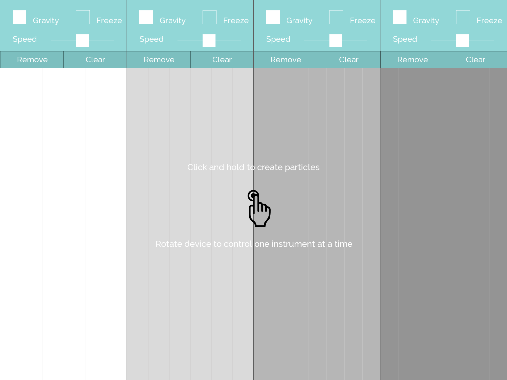
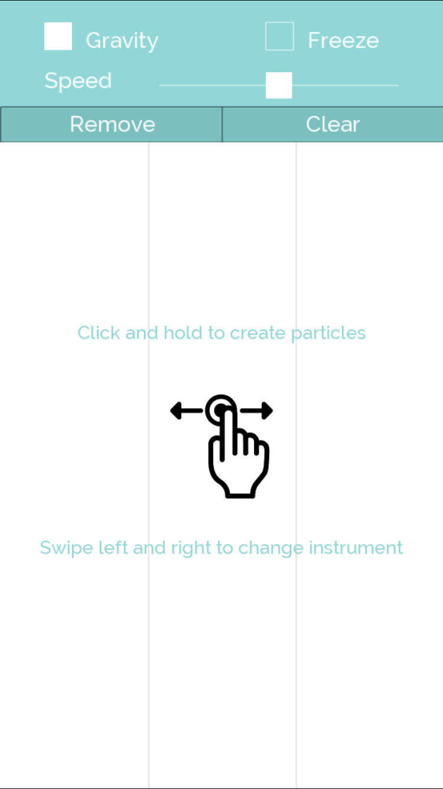
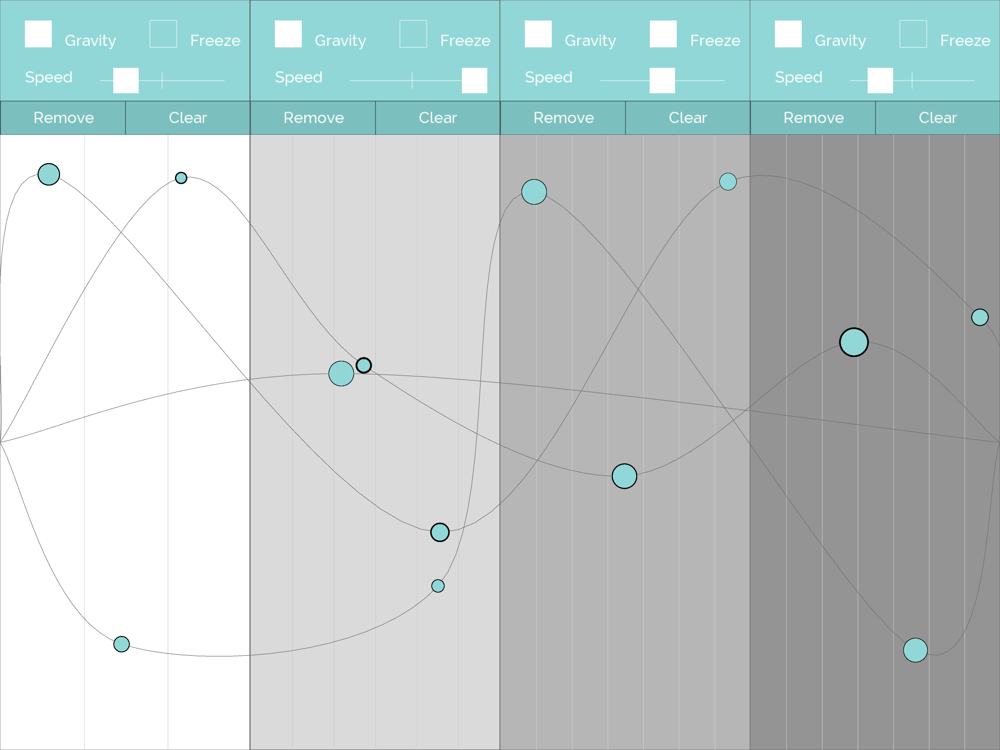
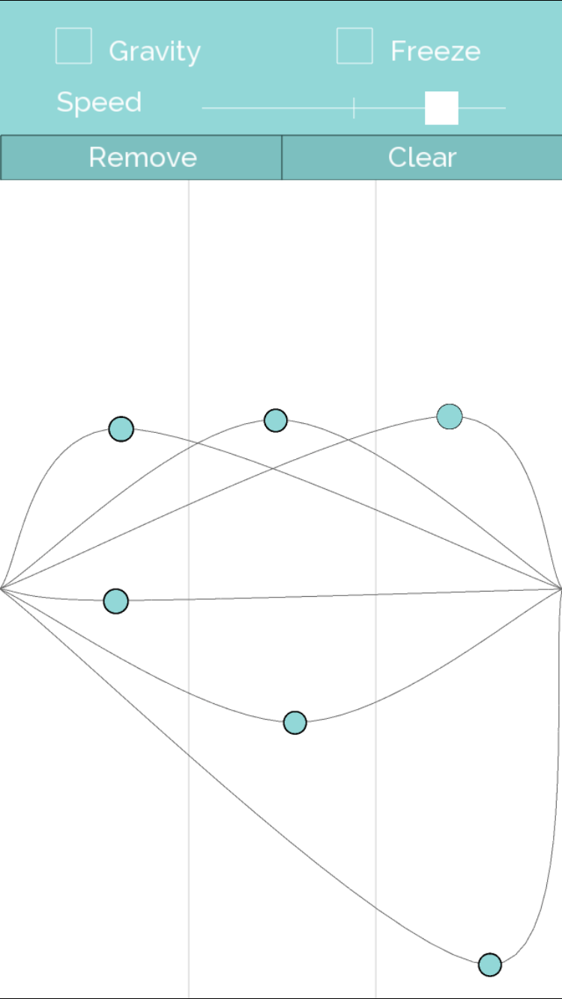
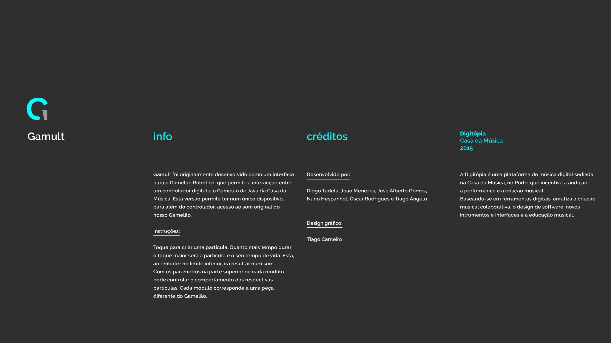
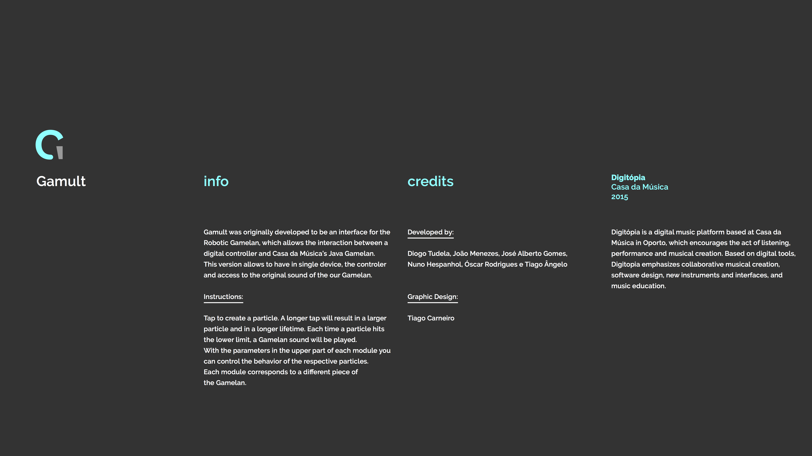

by Digitópia @ Casa da Música
Gamult foi originalmente desenvolvido como um interface para o Gamelão Robótico, que permite a interacção entre um controlador digital e o Gamelão de Java da Casa da Música. A versão mobile permite ter num único dispositivo, para além do controlador, acesso ao som original do nosso Gamelão.
Gamult was originally developed to be an interface for the Robotic Gamelan, which allows the interaction between a digital controller and Casa da Música’s Java Gamelan. This version allows to have in single device, the controler and access to the original sound of the our Gamelan.
Toque para criar uma partícula. Quanto mais tempo durar o toque maior será a partícula e o seu tempo de vida. Esta, ao embater no limite inferior, irá resultar num som. Com os parâ̂metros na parte superior de cada módulo pode controlar o comportamento das respectivas partículas. Cada módulo corresponde a uma peça diferente do Gamelão.
Tap to create a particle. A longer tap will result in a larger particle and in a longer lifetime. Each time a particle hits the lower limit, a Gamelan sound will be played.With the parameters in the upper part of each module you can control the behavior of the respective particles. Each module corresponds to a different piece of the Gamelan.






Créditos | CreditsDiogo Tudela, João Menezes, José Alberto Gomes, Nuno Hespanhol, Óscar Rodrigues e Tiago Ângelo.
DesignTiago Carneiro.
Contactos | Contacts
digitopia(at)casadamusica.com
digitopiadeveloper(at)gmail.com